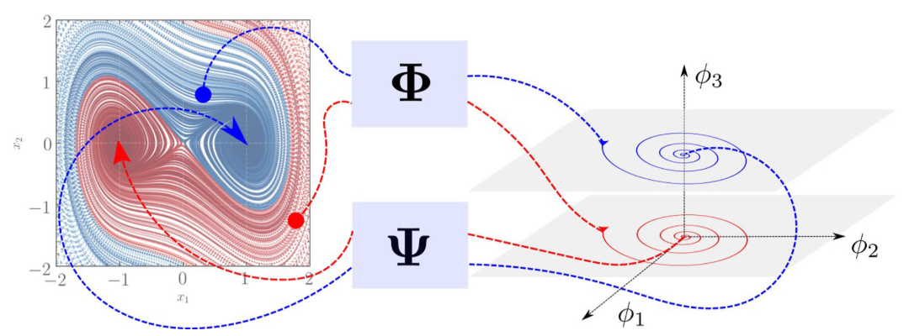

-

On the lifting and reconstruction of nonlinear systems with multiple invariant sets
Shaowu Pan, Karthik Duraisamy
Nonlinear Dynamics (2024)
-
Grad–Shafranov equilibria via data-free physics informed neural networks
Byoungchan Jang, Alan A. Kaptanoglu, Rahul Gaur, Shaowu Pan, Matt Landreman, William Dorland
Physics of Plasmas (2024)
-
PyKoopman: A Python Package for Data-Driven Approximation of the Koopman Operator
Shaowu Pan, Eurika Kaiser, Brian M. de Silva, Nathan Kutz, Steven L. Brunton
Journal of Open Source Software (2024)
-
Neural Implicit Flow: a mesh-agnostic dimensionality reduction paradigm of spatio-temporal data
Shaowu Pan, Steven Brunton, Nathan Kutz
Journal of Machine Learning Research (2023)
-
Particle reconstruction of volumetric particle image velocimetry with strategy of machine learning
Qi Gao, Shaowu Pan, Hongping Wang, Runjie Wei, and Jinjun Wang
Advances in Aerodynamics (2021)
-
Stiff-PINN: Physics-Informed Neural Network for Stiff Chemical Kinetics
Weiqi Ji, Weilun Qiu, Zhiyu Shi, Shaowu Pan, and Sili Deng
Journal of Physical Chemistry A (2021)
-
Sparsity-promoting algorithms for the discovery of informative Koopman invariant subspaces
Shaowu Pan, Nicholas Arnold-Medabalimi, and Karthik Duraisamy
Journal of Fluid Mechanics (2021)
-
On the Structure of Time-delay Embedding in Linear Models of Non-linear Dynamical Systems
Shaowu Pan, and Karthik Duraisamy
Chaos: An Interdisciplinary Journal of Nonlinear Science (2020)
-
Physics-Informed Probabilistic Learning of Linear Embeddings of Non-linear Dynamics With Guaranteed Stability
Shaowu Pan, and Karthik Duraisamy
SIAM Journal on Applied Dynamical Systems (2020)
-
Surrogate Modeling for Fluid Flows Based on Physics-Constrained Deep Learning Without Simulation Data
Luning Sun, Han Gao, Shaowu Pan, and Jian-Xun Wang
Computer Methods in Applied Mechanics and Engineering (2020)
-
Prediction of Aerodynamic Flow Fields Using Convolutional Neural Networks
Saakaar Bhatnagar, Yaser Afshar, Shaowu Pan, Karthik Duraisamy, and Shailendra Kaushik
Computational Mechanics (2019)
-
Long-time predictive modeling of nonlinear dynamical systems using neural networks
Shaowu Pan, and Karthik Duraisamy
Complexity (2018) (invited)
-
Data-driven Discovery of Closure Models
Shaowu Pan, and Karthik Duraisamy
SIAM Journal on Applied Dynamical Systems (2018)
-
The role of bulk viscosity on the decay of compressible, homogeneous, isotropic turbulence
Shaowu Pan, and Eric Johnsen
Journal of Fluid Mechanics (2017)
-
Combustion Heat-Release Effects on Supersonic Compressible Turbulent Boundary Layers
Zhenxun Gao, Chongwen Jiang, Shaowu Pan, and Chun-Hian Lee
AIAA Journal (2015)
-
Numerical investigation of rarefaction effects in the vicinity of a sharp leading edge
Shaowu Pan, Zhenxun Gao, and Chunhian Lee
AIP Conference Proceedings (2014)
-
Characterizing and improving predictive accuracy in shock-turbulent boundary layer interactions using data-driven models
Anand Pratap Singh, Shaowu Pan, and Karthik Duraisamy
55th AIAA Aerospace Sciences Meeting (2017)
-
Augmentation of turbulence models using field inversion and machine learning
Karthik Duraisamy, Anand Pratap Singh, and Shaowu Pan
55th AIAA Aerospace Sciences Meeting (2017)
-
An extended CFD model to predict the pumping curve in low pressure plasma etch chamber
Ning Zhou, Yuanhao Wu, Wenbin Han, and Shaowu Pan
AIP Conference Proceedings (2014)